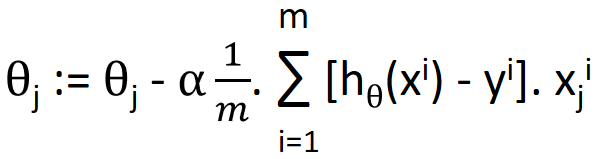

HOME BLOG EBOOKS ABOUT CONTACT SHOP
In the last section we learnt about cost function, which is essentially an error term denoting how far the hypothesis function is from what it should be. Hence our goal is to basically minimize the error i.e. the cost function and find the parameters corresponding to minimum cost function.
Gradient descent is one of the most popular and efficient ways to minimize the cost function. For now forget about the formula for the cost function, just consider it as a function of the parameters θ0, θ1.
If this were the plot of the cost function with respect to the parameters θ0, θ1, then our aim is to find the value of the parameters corresponding to the lowest point on the graph, marked by X. In gradient descent, what we do is, start at a random point, then take a small step in the direction of the steepest downhill. As we continue, we will inevitably end up at the minimum point.
Here’s how the gradient descent is implemented mathematically:
To get an intuitive understanding of this formula, consider the variation of the cost function with respect to a single parameter (say θ1), as shown below.
If we start at point A, the value of the parameter θ1 decreases, as both the slope at the point ∂J(θ1)/∂θ1 and the learning rate α are positive quantities. Finally as θ1 reaches point C, its value remains constant, as the slope at the point is zero. Instead if we start at point B, the value of the parameter θ1 increases till it reaches point C, as the slope at the point ∂J(θ1)/∂θ1 is a negative quantity.
Now we can discuss the importance of the learning rate α. Common sense says it’s a good idea to make the learning rate as big as possible, that way the gradient descent will be faster, hence saving time. This is kinda true, but there is a problem with making the learning rate very large, we might overshoot the target and may not reach the minimum at all. In the figure shown below, the parameter decreases from point A, but overshoots and reaches point B. Then it increases to point D and so on. So instead of converging, the cost function is actually diverging due to the large learning rate.
So the best option is to use a large value of α, but not too large at the same time. We might have to experiment with different values to get best results.
This is how the gradient descent is implemented for both parameters:
Notice how we stored the updated the parameters to 2 other variables temp0 and temp1 before assigning them to the parameters θ0 and θ1. This is to ensure that both parameters are updated simultaneously. Otherwise one parameter is updated first, then the other parameter is calculated using the updated first parameter. This sort of works, but we might get some weird behavior, so it is not the common practice.
If we substitute the equation for the cost function, we can get the parameter update rule as following:
Generally,

(Remember x0
Please re read Basic Calculus & Multi variable calculus if you are unsure about the derivations.
When dealing with data that has smaller no. of features, there is a faster alternative to the gradient descent called normal equation. In normal equation, the optimum values of the parameters are solved for analytically. The partial derivative of the cost function with respect to each parameter is computed and it is set to zero, to obtain the optimum values of the parameters.
All this may seem a little too complex at this point, but things will get a lot easier as we go on.